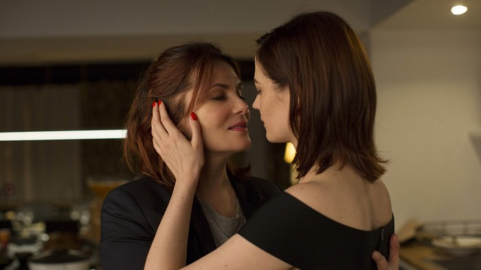

Screenings of the most wanted movies from the 46. FEST will be held on 5. march in Sava centar, Dom omladine, Fontana, Kinoteka and CZK Vlada Divljan.
116 films had their premiere on this years FEST, and for those that didn't manage to see all the films they wanted during the ten festival days, postFESTum is organized. On 5. march in Sava centar, Dom omladine, DKC, Fontanta, Kinoteka and CZK Vlada Divljan, there will be screenings of some of the most wanted of the 46. FEST.
The film "Face" by Malgorzata Szumowska which won the Silver bear - the great jury award on the recently held Berlinale will be screened in Sava centar at 16:30h. Another screening of the most wanted FEST movie - "Phantom thread" directed by Paul Thomas Anderson is scheduled for 19h and at 22h the latest movie by the famous director Roman Polanski "Based on a true story" will be screened.
In Dom omladine, the film "Film stars don't die in Liverpool" by Paul McGuian with Annette Bening and Jamie Bell, who won the BAFTA nominations will be screened at 17:30h. At 20h, "In the fade" by Fatih Akin, which won the Golden globe and best actress award at Cannes festival, will be screened, and at 22:30h "Animals" by Greg Zgalinski will be screened.
In the Kulturni centar hall, a film by Paolo Genovese "The Place" will be screened at 17h, at 19:30 the new film by cult director Claire Denis "Let the sunshine in" with Juliette Binoche and Gérard Depardieu, and at 22h the winner of the Golden palm - "Square" by Ruben Ostlund will be screened.